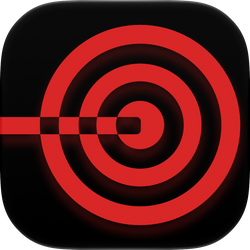

TripleMonkey Studio
from
from
A focus timer for iPhone that steps back while you work. Once a session starts, the controls dim and a glowing laser line tracks your progress, in portrait in your hand or in landscape on your desk.

Improve your memory recall with this classic image matching game. Open all of the matching treasure chests to win. Challenge yourself to beat your best time and fewest moves, then climb the Game Center leaderboards to be the best among your friends and the world. Free on iPhone.
TripleMonkey Studio is an independent design and development studio from Nigel Krajewski. I'm currently focused on creating clean, reliable iOS apps with practical utility and a little bit of fun. From first sketch to production code, careful consideration is placed on the User Experience, seeking a path of least resistence to build intuitive and beautiful designs.